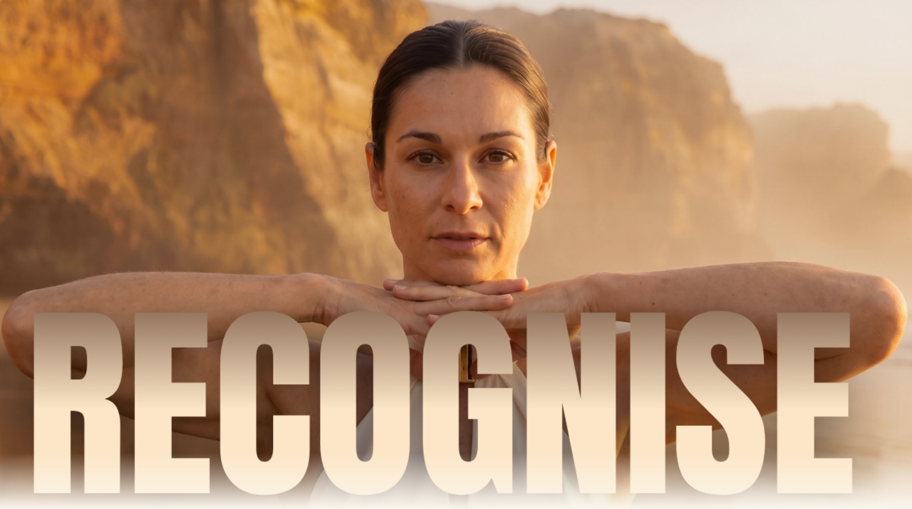

Recognise · Companion Two
Not lost. Just not kept at an address anyone could guess.
This link is retired, and that is on purpose. The Belief List is a paid companion, so it does not sit at a URL that can be typed from memory.
Your copy is in your purchase email. If you cannot find it, reply to that email and it will come straight back to you.
If you are Angie
This page is working exactly as intended. The live Belief List is the tokenised address in the build notes, and that is the one to send.